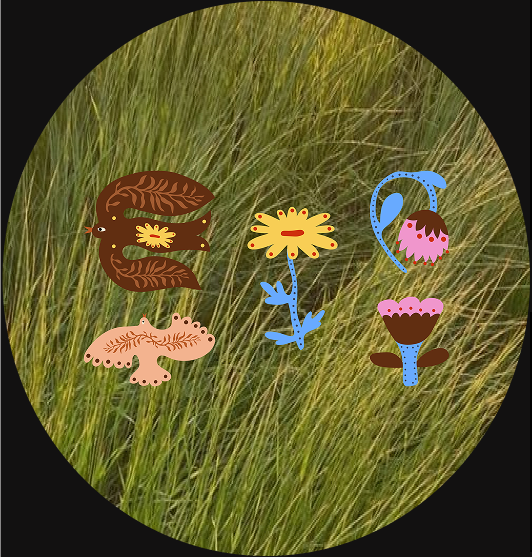
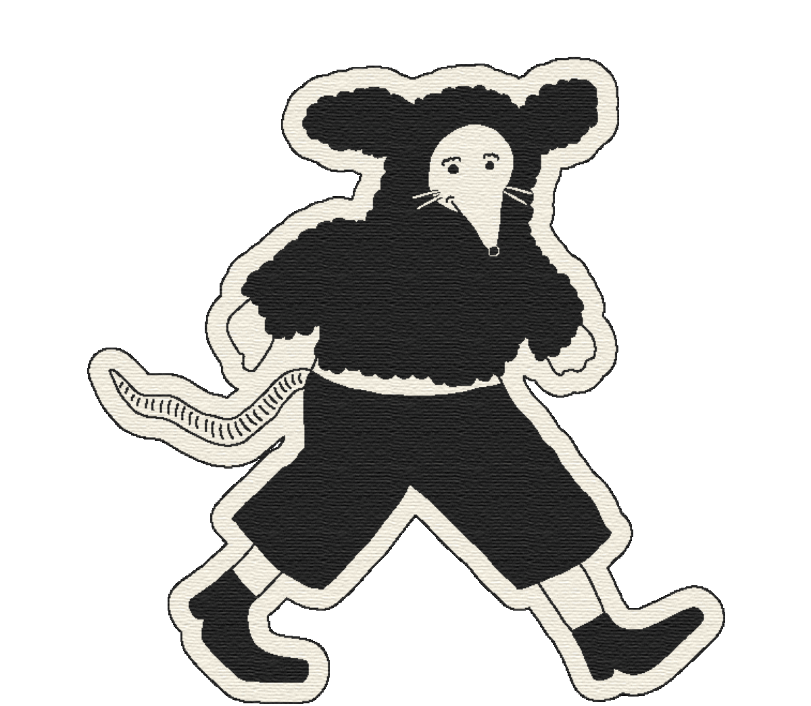

If you’re a new entrepreneur, you might be hesitant to invest in brand strategy and design, because you don’t know how things are going to shift inside your business. With a Design Intensive, you can confidently engage with potential clients and show up for your brand in a big way. That way, even when things change, you have a rock-solid visual foundation to fall back on.
Sometimes impatience is a good thing. If you are looking for a boost in confidence, visual presence, and sales, start with your design. In the world of business, things tend to build slowly over time. Consider this the one time you don’t have to wait to see the results that you want.
You’ve already had the business idea that you know will impact your life, your industry, and your customers. But a business is only as good as the way that it shows up in the world. Branding and website design are the cherries on top of all your greatest innovations.

As a new entrepreneur, people will often tell you: Hold off on investing in design until you find your footing.
But what they’re missing is the fact that finding your footing is borderline impossible without consistent branding aiding you as you start to grow your audience and presence. If people have nothing to latch onto, nothing to remember you by, your business will not find the footing.
Brand Intensives were developed for the business owner who wants to ditch the bland C*nva templates from the jump and get the momentum that they are seeking without fighting against their own branding day in and day out.
Logo
variations
Colour
palette
Brand
elements


Type
(with licenses)
Collateral


Mini style
guide
Revisions &
support


Drawing on the iconic 60s to revive a social media manager's brand.
Fusing the styles of the past and future for a visionary agency.


An immersive world for a word wizard—influenced by fantasy, mythology, and royal themes.
Apply for a day that works with your schedule, keeping in mind that you will need to be by your computer on that day to give feedback.
Complete an in-depth brand discovery questionnaire (including visual inspiration) 4+ days ahead of your strategy call.
Meet for the scheduled strategy call 4+ days before your selected intensive day to establish the creative direction, clearly define objectives, and approve the order of priorities.
We'll spend the full eight hours designing, revising, and perfecting your brand’s visual design.
Throughout the day, we’ll send across your assets in order of priority and request your timely feedback. This is required to ensure that we complete as much as possible during your intensive day. Any revisions will be implemented in real time.
At the end of the day, you will receive a link with your final files and style guide. We’ll walk you through your new brand so you can confidently implement your new identity moving forward. Easy-peasy!
Payment plans available.
0 additional costs. Yes, even fonts are on us :)
Limited spots available.